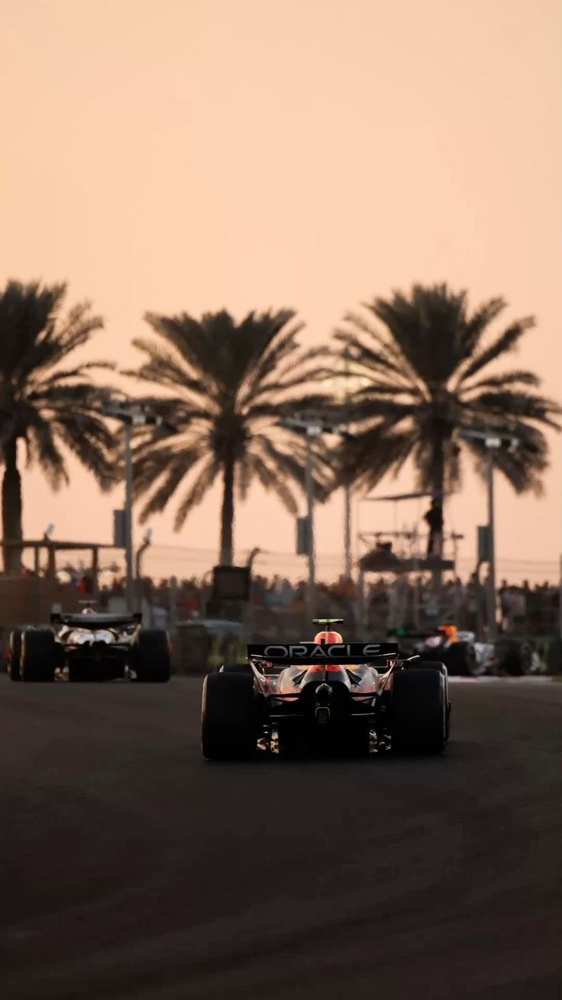
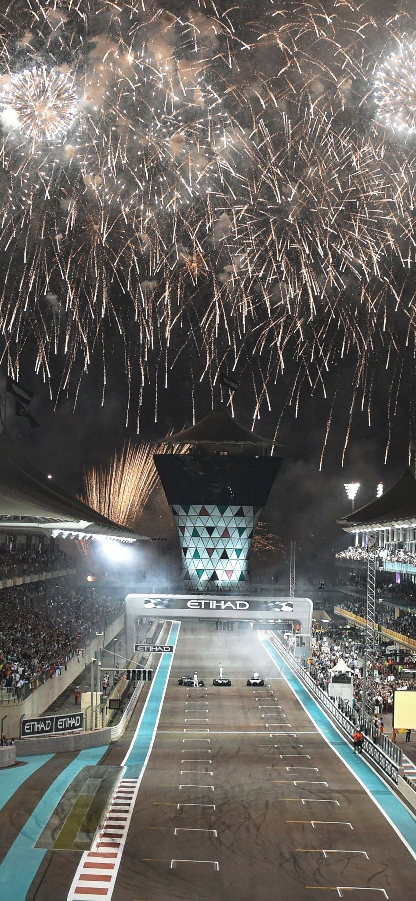

Abu Dhabi Grand Prix 2026
The Final Race. An Unforgettable Weekend.
One Final Race. One Spectacular Setting.
From 4 to 6 December 2026, the world's finest drivers arrive at
Yas Marina Circuit for the
Formula 1 Etihad Airways Abu Dhabi Grand Prix,
bringing the 2026 season to a spectacular close.
Few races offer a setting quite like Abu Dhabi. As the sun sets over Yas Marina,
the circuit comes alive beneath the lights, with the excitement of Formula 1
unfolding against a backdrop of waterfront views, luxury yachts and an electric atmosphere.
Whether the championship is still to be decided or the final race becomes a
celebration of the season, Abu Dhabi promises a weekend worth experiencing.
The Final Weekend of Formula 1
The action begins on Friday, 4 December, with practice sessions,
followed by qualifying on Saturday, 5 December, when drivers compete
for their final starting positions of the year.
On Sunday, 6 December, the lights go out at
17:00 local time for 58 laps around Yas Marina Circuit.
For those looking to experience the Grand Prix beyond the grandstands,
premium hospitality options offer exceptional circuit views, refined dining
and an exciting atmosphere throughout the weekend.


Beyond the Chequered Flag
In Abu Dhabi, the experience continues long after the racing ends.
The Yasalam After-Race Concerts bring international music stars
to Yas Island, with Lewis Capaldi, Zara Larsson, Imagine Dragons,
The Chainsmokers and The Script among the announced performers.
Beyond the circuit, Abu Dhabi invites visitors to discover its exceptional
hotels, waterfront restaurants, beautiful beaches and cultural landmarks.
From an evening at a celebrated restaurant to a few additional days of
relaxation, the Grand Prix is the perfect occasion to discover more of the city.
Your Grand Prix Experience
Whether you are planning a weekend centred around the race or a longer escape
to Abu Dhabi, Quintessentially can help arrange an experience tailored to your preferences.
From race tickets and premium hospitality to luxury accommodation,
restaurant reservations and travel arrangements, our team would be
delighted to assist with the details.
Event Details
Dates: 4–6 December 2026
Race: Sunday, 6 December at 17:00 local time
Location: Yas Marina Circuit, Abu Dhabi, United Arab Emirates
Grand Prix d’Abou Dhabi 2026
La dernière course. Un week-end inoubliable.
Une dernière course. Un cadre spectaculaire.
Du 4 au 6 décembre 2026, les meilleurs pilotes du monde
se retrouvent au circuit de Yas Marina pour le
Formula 1 Etihad Airways Abu Dhabi Grand Prix,
qui marque la fin spectaculaire de la saison 2026.
Peu de courses offrent un décor comparable à celui d’Abou Dhabi.
Au coucher du soleil, le circuit de Yas Marina s’illumine,
tandis que la Formule 1 prend vie entre vues sur le front de mer,
yachts de luxe et ambiance électrique.
Que le championnat reste à départager ou que la dernière course
célèbre la saison écoulée, Abou Dhabi promet un week-end mémorable.
Le dernier week-end de Formule 1
Le programme débute le vendredi 4 décembre avec les essais,
suivis des qualifications le samedi 5 décembre,
lorsque les pilotes se disputent leurs dernières positions
sur la grille de départ de l’année.
Le dimanche 6 décembre, le départ sera donné à
17 h, heure locale, pour 58 tours du circuit de Yas Marina.
Pour vivre le Grand Prix au-delà des tribunes, les offres
d’hospitalité premium proposent des vues privilégiées sur le circuit,
une restauration raffinée et une atmosphère animée tout au long du week-end.
Au-delà du drapeau à damier
À Abou Dhabi, l’expérience se poursuit bien après l’arrivée de la course.
Les concerts Yasalam après la course accueillent
des stars internationales sur Yas Island, notamment
Lewis Capaldi, Zara Larsson, Imagine Dragons,
The Chainsmokers et The Script, parmi les artistes annoncés.
Au-delà du circuit, Abou Dhabi invite à découvrir ses hôtels
d’exception, ses restaurants en bord de mer, ses magnifiques plages
et ses sites culturels.
Qu’il s’agisse d’une soirée dans un restaurant renommé
ou de quelques jours supplémentaires de détente,
le Grand Prix est l’occasion idéale d’explorer davantage la ville.
Votre expérience du Grand Prix
Que vous envisagiez un week-end consacré à la course
ou un séjour prolongé à Abou Dhabi, Quintessentially peut
organiser une expérience adaptée à vos envies.
Des billets de course et prestations d’hospitalité premium
aux hôtels de luxe, réservations de restaurants et déplacements,
notre équipe se fera un plaisir de prendre en charge les détails.
Informations pratiques
Dates : du 4 au 6 décembre 2026
Course : dimanche 6 décembre à 17 h, heure locale
Lieu : circuit de Yas Marina, Abou Dhabi, Émirats arabes unis
Grand Prix van Abu Dhabi 2026
De laatste race. Een onvergetelijk weekend.
Eén laatste race. Een spectaculaire locatie.
Van 4 tot en met 6 december 2026 komen de beste
coureurs ter wereld samen op het Yas Marina Circuit
voor de Formula 1 Etihad Airways Abu Dhabi Grand Prix,
de spectaculaire afsluiting van het seizoen 2026.
Weinig races hebben een decor zoals Abu Dhabi.
Terwijl de zon ondergaat boven Yas Marina, komt het circuit
onder de lichten tot leven, met de spanning van de Formule 1
tegen een achtergrond van uitzicht op het water,
luxejachten en een bruisende sfeer.
Of de wereldtitel nog beslist moet worden of de laatste race
een viering van het seizoen wordt, Abu Dhabi belooft
een weekend om niet te vergeten.
Het laatste Formule 1-weekend
Het programma begint op vrijdag 4 december
met de vrije trainingen, gevolgd door de kwalificatie
op zaterdag 5 december, wanneer de coureurs
strijden om hun laatste startposities van het jaar.
Op zondag 6 december doven de startlichten
om 17.00 uur lokale tijd voor 58 ronden
op het Yas Marina Circuit.
Voor wie de Grand Prix buiten de tribunes wil beleven,
bieden premium hospitality-arrangementen een prachtig
uitzicht op het circuit, verfijnde gastronomie en
een levendige sfeer gedurende het hele weekend.
Meer dan de finishvlag
In Abu Dhabi gaat de beleving nog lang na de race verder.
De Yasalam After-Race Concerts brengen
internationale artiesten naar Yas Island, met onder anderen
Lewis Capaldi, Zara Larsson, Imagine Dragons,
The Chainsmokers en The Script als aangekondigde namen.
Buiten het circuit nodigt Abu Dhabi bezoekers uit om
bijzondere hotels, restaurants aan het water,
prachtige stranden en culturele bezienswaardigheden te ontdekken.
Van een avond in een gerenommeerd restaurant tot enkele
extra dagen ontspanning: de Grand Prix is de perfecte
gelegenheid om de stad verder te verkennen.
Uw Grand Prix-ervaring
Of u nu een weekend rond de race plant of langer
in Abu Dhabi wilt verblijven, Quintessentially helpt u
graag een ervaring samen te stellen die bij uw wensen past.
Van racetickets en premium hospitality tot luxueuze
accommodaties, restaurantreserveringen en reisarrangementen:
ons team helpt u graag met alle details.
Evenementgegevens
Data: 4–6 december 2026
Race: zondag 6 december om 17.00 uur lokale tijd
Locatie: Yas Marina Circuit, Abu Dhabi, Verenigde Arabische Emiraten